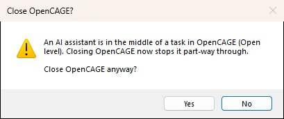

OpenCAGE can be driven by an AI assistant, such as Claude, through the Model Context Protocol (MCP). You describe what you want — "create a new level which spawns the player in a corridor built from SCI_AndroidLab's pieces" — and the assistant does it in OpenCAGE:
The assistant works in the OpenCAGE window you have open, through the same code the editor's own menus and dialogs use. Everything it does appears in the editor and the Viewport as it happens. Script changes land on the editor's undo history, and nothing is written to the game until it (or you) saves.
OpenCAGE ships a small program for this, OpenCAGE.MCP.exe, in the folder OpenCAGE is installed in, beside OpenCAGE.exe. On Steam, find that folder with right-click OpenCAGE → Manage → Browse local files. Your AI app runs that program. If OpenCAGE isn't open, the program starts it the first time the assistant uses it.
Claude Desktop: open Settings → Developer → Edit Config and add OpenCAGE to claude_desktop_config.json, using the path to your OpenCAGE folder (backslashes doubled), then restart Claude Desktop:
{
"mcpServers": {
"opencage": {
"command": "C:\\Path\\To\\OpenCAGE\\OpenCAGE.MCP.exe"
}
}
}Claude Code: add it once from a terminal:
claude mcp add opencage -- "C:\Path\To\OpenCAGE\OpenCAGE.MCP.exe"Other MCP apps: any app that can run a local ("stdio") MCP server works the same way: give it the path to OpenCAGE.MCP.exe. The program also takes these optional arguments:
--editor <path> — the OpenCAGE.exe to start, if not the one beside it;--no-launch — only work with an OpenCAGE that is already open;--launch-at-start — start OpenCAGE as soon as the app connects, rather than on the assistant's first request;--toolsets <names> — offer the assistant only some groups of tools at first, for apps that struggle with long tool lists (for example --toolsets core,script,world,cameras). The assistant can ask for the rest when it needs them. The groups are core, script, flowgraph, zones, viewport, world, cameras, characters, lights, sound, animation, assets, porting, gamedata and game;-- — passed to OpenCAGE when the program starts it, for example -- -disable_viewport.Assistants can only reach OpenCAGE while Options → Misc → Allow AI Assistants (MCP) is ticked. It is on by default. Untick it and nothing can drive the editor: an assistant that tries, even one that started OpenCAGE itself, is told to turn the option back on.
OpenCAGE.MCP.exe passes the assistant's requests to the open OpenCAGE over a local connection. Only programs running as you, on your PC, can use it. With more than one OpenCAGE open, the first one opened takes the requests.While the assistant is running one of OpenCAGE's tools, the left end of the status bar, along the bottom of the OpenCAGE window, shows a blue label: AI assistant working: tool..., naming the tool, such as AI assistant working: Open level... or AI assistant working: Find composites.... OpenCAGE's usual status messages (loading, saving, undo) appear beside it. The label stays for about three seconds after each call, so an assistant making several calls in a row shows one steady label, and it goes once the assistant stops. While it's up, let the assistant finish before you edit or close OpenCAGE.
Closing OpenCAGE while a tool is running asks first, in a box titled Close OpenCAGE?: An AI assistant is in the middle of a task in OpenCAGE (tool). Closing OpenCAGE now stops it part-way through. Close OpenCAGE anyway?

While the question is up, the assistant waits for you: anything new it asks OpenCAGE for is turned away until you've answered, and a level that's loading carries on loading but doesn't open its panels until then. The question only comes up while a tool is actually running. Between calls, even while the label is still showing, OpenCAGE closes as it always does.
These are the tools the assistant is given. You don't call them yourself — describe what you want and the assistant picks them — but knowing them helps you ask for what's possible.
| Area | Tools |
|---|---|
| Levels & game | get_editor_state, list_levels, load_level, create_level (optionally importing composites), duplicate_level, delete_level, diff_level (what has changed since the last save or a backup), save_level (optionally Save & Build, choosing which bakers run), list_backups, create_backup, restore_backup, delete_backups, launch_game, launch_options, close_game, game_directories, get_player_setup, set_player_start (where the player starts, and with what), runtime_utils (Live Link to the running game) |
| Undo & activity | undo, redo, undo_group (makes several requests one undo step), get_undo_history, get_activity (what the assistant's last requests did, and how far a long one has got) |
| Finding things | find_composites, get_composite, describe_entity, get_effective_parameters (the values a placement really ends up with, after aliases and links), get_instance_overrides, find_entities (by name, type, value or place, forgiving misspellings), find_references, trace_links (what drives an entity, and what it drives, across composites), find_links, get_placements, list_dead_proxies, list_function_types, describe_function_type, get_usage_patterns (how the shipped levels wire up a function type or archetype), list_enums, list_enum_string_values |
| Rooms & the world | find_places (a room by name: a zone, a composite, an instance or a model), get_bounds, raycast (rays, the floor under a point, line of sight), sample_space (points on a room's free floor: its centre, a loop round it clear of the walls, a grid), transform_points (between world and composite space, and rotations that look at a point), drop_to_floor, query_navmesh (nearest point, reachability, path length), export_region_collision. These read the level's collision as it stands in the editor, unsaved changes included, with or without the Viewport. |
| Scripting | create_entities (functions, composite instances, variables, aliases and proxies, with positions in the composite's space or the world's, parameters, links and flowgraph nodes), create_composite, set_parameters (for one placement of a composite or all of them), remove_parameters, rename_entity, rename_pin, delete_entities, copy_entities, move_entities, add_links (making the proxies and aliases a link between composites needs), remove_links, set_trigger_sequence, script_batch (several edits as one step), clear_instance_overrides, retarget_proxy, remove_references |
| Composites | manage_composites (rename, move, folders, delete), move_into_composite, deinstance and group_into_composite — the De-instance Composite Instance and Create Composite From Selected commands — and duplicate_composite (optionally switching chosen instances to the copy, as Create Composite Variant does) |
| Flowgraphs | get_flowgraph, layout_flowgraph (gives a composite shown as a link list flowgraph pages that draw all its links), edit_flowgraph_pages (including arrange, as Arrange Page does), edit_flowgraph_nodes, capture_flowgraph |
| Cameras & CAGEAnimation | create_camera_animation (a camera, the CAGEAnimation that moves it and what starts it, from points you give or a loop round a room), animate_camera_path, get_cage_animation, find_cage_animations, animate_parameters (keyframes; retiming, offsetting, reversing), check_cage_animation (whether it will play in game, and what's missing if not), set_animation_events, preview_cage_animation (optionally looking through the animated camera), set_animated_model |
| Characters | spawn_npc (a human, android or the alien, from the shipped archetypes), describe_npc, set_npc, create_npc_route (patrols), play_character_animation, get_character_appearance, set_character_appearance, check_character_appearances — see the Character Editor |
| Lights | list_lights (the lights in a room and the controls that really set them), set_lights (colour, intensity, flicker, for one placement or all), add_light |
| Zones | get_zones, get_zone_links, create_zone, set_zone_contents, create_zone_link, delete_zone, merge_zones, check_zones, analyse_zones, link_zones, auto_zone |
| Entity resources | get_entity_resources, set_renderable (model and materials), set_collision, set_physics_system |
| Collision & physics | list_collision_proxies, import_collision_proxy, list_physics_systems, import_physics_system, export_collision_mesh |
| Other levels | search_level, find_in_levels (which levels use something), describe_level_composite, port_composites (see Composite Porting), export_composites_to_levels, release_level_cache |
| Models | list_models, describe_model, place_model, import_model (optionally placing it, with collision), export_model, edit_model |
| Materials & textures | list_materials, describe_material, create_material, edit_material, list_material_permutations, retry_shader_harvest, list_material_mappings, edit_material_mapping, list_textures, describe_texture, import_texture, export_textures, edit_texture, find_asset_users (which materials, models and placed entities use a texture or material) |
| Sky & UI | get_galaxy, set_galaxy, list_ui_files, edit_ui_pak |
| Animation | list_animation_sets, list_animations, describe_animation, preview_animation, list_skeletons, export_animations, import_animation, remove_animation, edit_animation_events, check_animations, get_character_animation_profile (what a character can play), describe_animated_prop, list_camera_clips, list_blend_sets, edit_blend_set, list_anim_trees, get_anim_tree (optionally with where the Animation Tree Editor draws each node, its ghosts, and which copy draws each link), find_in_anim_trees, edit_anim_tree (a node it adds can be given its place on the graph), edit_anim_tree_layout (arranging a tree, putting it back to the automatic layout, moving nodes, adding and removing ghosts, moving links between copies; written into ANIMATION.PAK straight away and can't be undone - a running game holds that file open, so the change then waits for the file's next save unless the assistant closes the game first, and a layout of a tree with unsaved changes waits to be saved with them), open_anim_tree (shows a tree in the Animation Tree Editor), capture_anim_tree (a picture of a tree as the editor draws it, open or not), get_behaviour_tree, edit_behaviour_tree |
| Sound | list_sound_banks, describe_sound_event, export_sound, replace_sound, place_sound, list_dialogue_lines, find_spare_sound_events — see Sound Events |
| Packages | export_composite_package, inspect_composite_package, import_composite_package, mods |
| Configuration & text | list_config_files, read_config, write_config, edit_config_elements, get_config_record, set_config_record, reset_configs, list_strings, set_strings, list_text_databases, set_text_databases — what the configuration editors edit |
| Editor & viewport | open_composite, select_entities, editor_options, capture_viewport, get_viewport_state, set_viewport_view, set_viewport_camera (optionally looking through a camera entity), pick_in_viewport (what is at a point of the picture), viewport_action, place_in_viewport, get_composite_preview |
Asked for "a new level which spawns the player in a corridor built from SCI_AndroidLab", an assistant works through something like this:
create_level makes and opens a new level, as File → Create Level does.search_level on PRODUCTION/SCI_ANDROIDLAB finds Archetypes\Script\Mission\SpawnPositionSelect, the composite that holds the player's Character. It also finds the corridor pieces under AYZ\Science\...\Corridor_Elements, and where the level places them.port_composites brings them in, with their models, materials, textures and collision. The player's display models (DisplayModel:RIPLEY_FP and the suit variants) come along automatically.create_entities places the floor, wall and arch pieces in the new level's root composite, spaced by their sizes. It also places a SpawnPositionSelect instance on the floor, with spawn_on_reset set to true so the player spawns there when the level starts.create_composite can add some script as well. For example, a light that a ThinkOnce switches on at the start. Its flowgraph page is laid out automatically.capture_viewport lets it look at the result, and save_level with Save & Build writes the level and builds its navmesh, lighting and the rest. Then it's ready for Launch Game.Asked to "make a CAGEAnimation that moves a camera round the room called Canteen", an assistant works through something like this:
find_places finds the room by its name (forgiving misspellings): on Torrens, the Canteen composite and the Zone_Canteen zone that streams it.sample_space picks points round the room at eye height, clear of the walls and furniture, by casting rays against the room's collision as it stands in the editor (your unsaved changes included). Each leg between points is checked for line of sight.create_camera_animation does the rest as one undo step: a CameraResource, a CAGEAnimation that moves it smoothly along those points at a steady speed (looping, if asked), and the links that switch the camera on, start the animation when the room loads, and hand the view back at the end.check_cage_animation confirms nothing is missing for it to play in game, and preview_cage_animation shows a few frames through the camera in the Viewport. Then save_level.MCP apps that support prompts also list a few ready-made tasks, such as a camera fly-through, zoning a level, and porting and placing content from another level.
AI: prefix ("AI: Add 17 entities"). Edit → Undo (or asking the assistant to undo) takes it back. This covers everything in the level's script: entities, parameters, links, trigger sequences, CAGEAnimations, entity resources (models, collision, physics), flowgraph pages and nodes, and composites (new, renamed, moved, deleted, De-instance, Create Composite). It also covers changes to the level's materials, material mappings and textures. A task that takes several requests can be made one step, so a single undo takes the whole task back. The assistant won't undo a change you made unless you ask it to. Porting composites, imports, and changes to animations, sounds, configuration files and text can't be undone, as when you make them yourself; the tools that change files every level shares can do a dry run first.runtime_utils lets it check what the game is running, call methods on entities and take screenshots of the game. set_viewport_view's live_link_camera links the game's camera and the Viewport's. See Live Link.